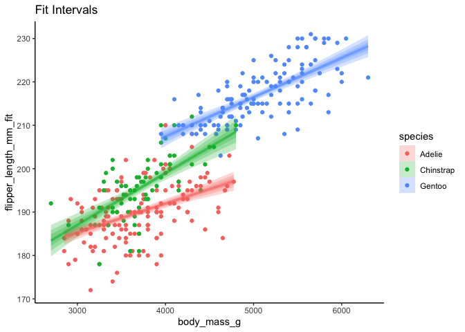
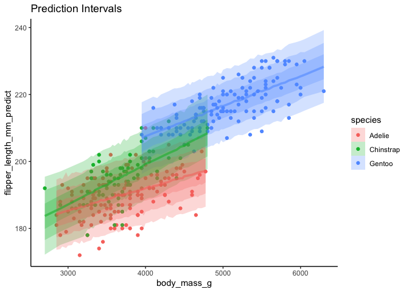

The goal of sinterval is to use simulation from fit models to get distributions of responses given fit, prediction, or other intervals. This is similar to getting posterior predictions and fits from a Bayesian model, but for models fit using likelihood, least squares, or other techniques.
Installation
You can install sinterval from github with:
remotes::install_github("jebyrnes/sinterval")You can install the released version of sinterval from CRAN once it is up with:
install.packages("sinterval")Example
Here is a basic example using ggdist for visualization.
library(sinterval)
library(palmerpenguins)
library(ggplot2)
library(ggdist)
mod <- lm(flipper_length_mm ~ body_mass_g*species,
data = penguins)
fit_sims <- add_fitted_sims(penguins, mod)
predicted_sims <- add_predicted_sims(penguins, mod)
ggplot(fit_sims,
aes(x = body_mass_g,
y = flipper_length_mm_fit,
color = species, fill = species)) +
geom_point(data = penguins, aes(y = flipper_length_mm)) +
stat_lineribbon(alpha = 1/4) +
theme_classic() +
labs(title = "Fit Intervals")
ggplot(predicted_sims,
aes(x = body_mass_g,
y = flipper_length_mm_predict,
color = species, fill = species)) +
geom_point(data = penguins, aes(y = flipper_length_mm)) +
stat_lineribbon(alpha = 1/4) +
theme_classic() +
labs(title = "Prediction Intervals")